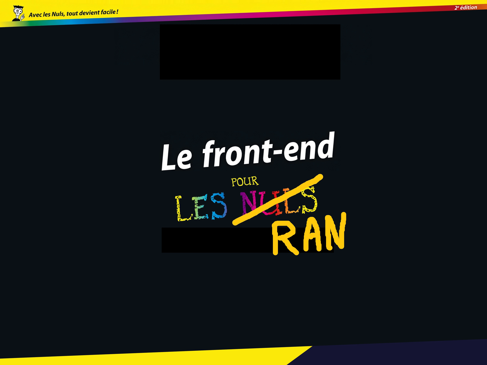
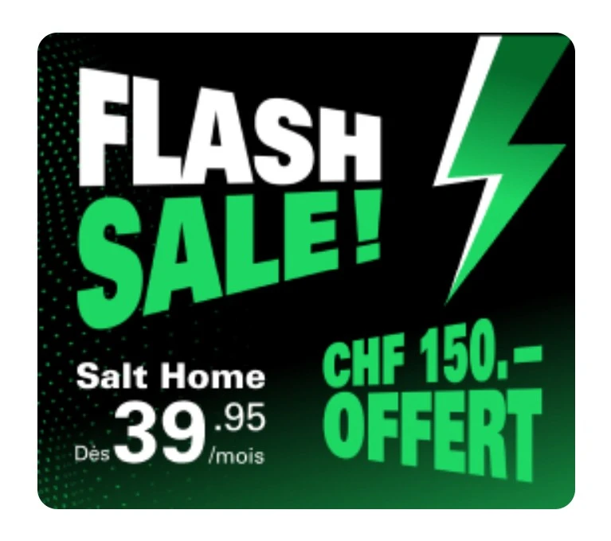
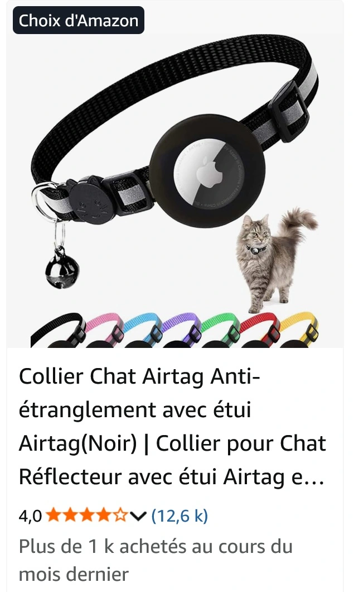
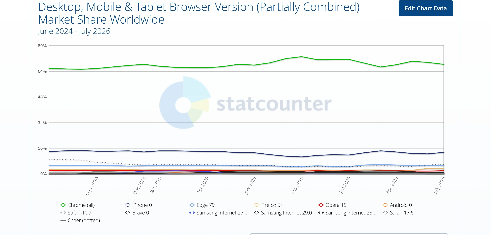
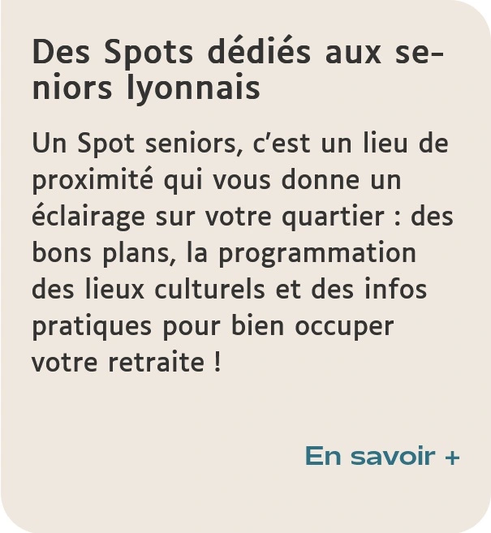
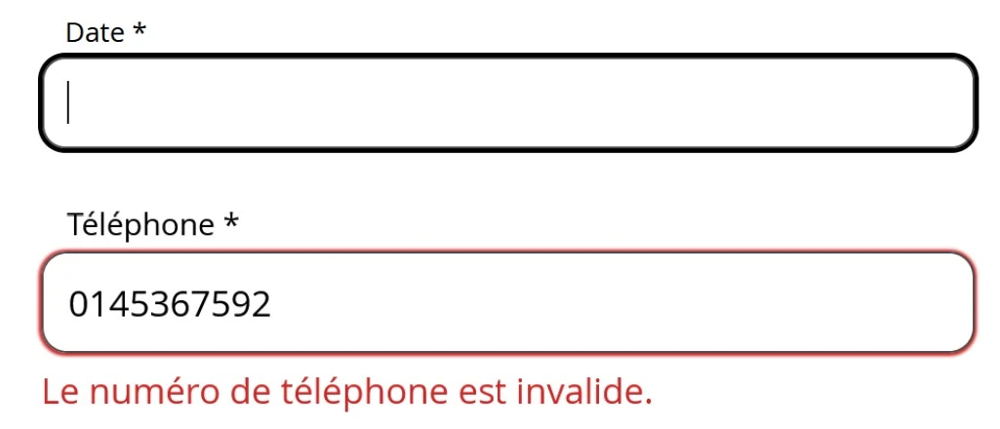
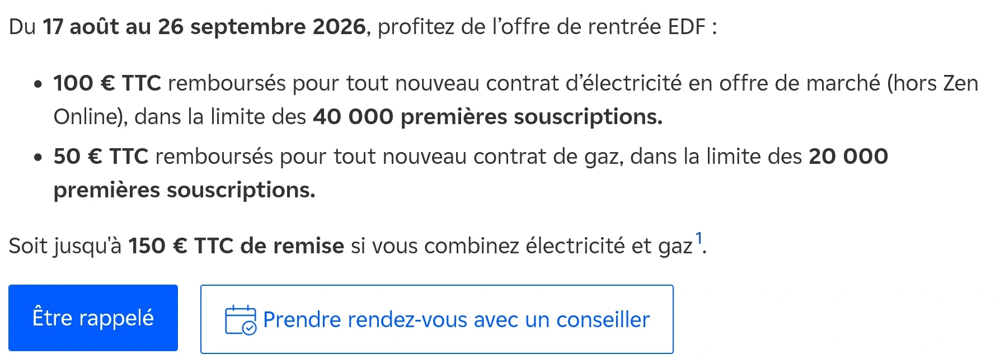
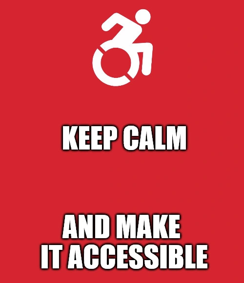

Le front-end pour les RAN

Qui suis-je ?
- Lena Chandelier
- Lead développeuse Front-end et Référente Accessibilité Numérique
- Salt Mobile SA, Suisse
Au programme
- Du code ? Mais je ne suis pas technique moi !
- Quelles connaissances me faut-il en tant que Référent·e Accessibilité Numérique ?
- La sémantique
- Les images
- La pertinence des intitulés
- Les formulaires
- Autres vérifications simples
- Que peut-on vérifier au niveau du CSS ?
- Et ARIA dans tout ça ?
- Des outils pour vous aider
- À vous de jouer !
- Des liens pour vous aider
- Des spécialistes pour vous aider
Du code… Mais je ne suis pas technique moi !
- Prenez une grande respiration, tout va bien se passer.
- Il n’y a pas besoin d’être expert·e technique pour être un·e bon·ne RAN.
- L’objectif est de vous donner les bases nécessaires pour y arriver même sans être technique.
Disclaimer : Je pars du principe que vous êtes des grand·es débutant·es en la matière.
Quelles connaissances me faut-il en tant que Référent·e Accessibilité Numérique ?
- Avoir quelques bases de HTML, de CSS et d’ARIA
- Savoir se servir de la console du navigateur
L'objectif est de savoir rapidement repérer les problèmes d'accessibilité les plus fréquents et d'identifier les situations qui nécessitent un audit plus approfondi. Avec des connaissances de base, cela se voit très vite !
Personne ne peut vous demander d’être expert·e sur ce sujet. C’est technique et c’est complexe.
Des spécialistes sont là pour vous aider.
La sémantique
Quelques critères RGAA concernés : 8.9, 9.1, 9.2, 9.3, 12.6.
La sémantique est une des bases fondamentales d’un site accessible. Grâce à elle, un lecteur d’écran saura restituer correctement ce qui s’affiche, un logiciel de reconnaissance vocale pourra aisément faire les actions demandées par son utilisateur...
Privilégiez les éléments HTML qui expriment nativement la fonction ou la structure du contenu :
- Balises de base : <html><head><body>
- Balises de titres : <h1> à <h6>
- Balises de zones : <header><main><footer><aside><nav><article>
- Balises d’images : <img><svg><figure><figcaption>
- Balises de listes : <ul><ol><dl>
- Balises d’actions : <a><button>
- Balises de formulaires : <form><fieldset><legend><label><input><select> <option><textarea>
Les images
Quelques critères RGAA concernés : 1.1, 1.2, 1.3 (+ 1.6 et 1.7 si l’image nécessite une description détaillée, 1.8 s’il s’agit d’une image texte).
Il faut d’abord savoir détecter si l’image est décorative ou non.
- Oui : alt=""
- Non : Arbre décisionnel pour l’attribut alt, et un autre, plus détaillé
Exercice : les images sont-elles décoratives ?
Exercice : l’image est-elle décorative ?

Exercice : l’image est-elle décorative ?

Exercice : l’image est-elle décorative ?

La pertinence des intitulés
Quelques critères RGAA concernés : 6.1, 6.2, 8.6, 9.1, 11.2, 11.9.
Les intitulés rassemblent tout ce qui est titre de page, titres dans la page, texte dans un bouton ou lien, étiquette de champ de formulaire (label)
Ils doivent clairement indiquer ce qu’ils sont ou ce qu’ils font.
On rencontre souvent des intitulés du type «cliquez ici», «lire la suite», «en savoir plus». Cela ne dit absolument pas où l’on va atterrir, ce qu’on va lire ou savoir de plus si nous n’avons pas le contexte visuel autour.
Démo : Incidence sur les lecteurs d’écrans
Vidéo présentant la restitution d’intitulé par un lecteur d’écranSolutions
- Éviter les «cliquez-ici», «en savoir plus», «lire la suite» «ok» et rendre l'intitulé visible suffisamment explicite
- Sinon (impact design par exemple), s’assurer de la présence d’un texte de remplacement via l’attribut aria-label ou un texte caché de manière accessible

<a href="https://www.instagram.com/reel/DVympleDHR1"
aria-label="En savoir + : Des Spots dédiés aux seniors lyonnais">
En savoir +
</a>Exercice : Que peut-on dire sur ces intitulés ?

Exercice : Que peut-on dire sur ces intitulés ?
Exercice : Que peut-on dire sur ces intitulés ?

Les formulaires
Sont à vérifier :
- Chaque champ a un intitulé (pertinent, bien sûr)
- Les champs de même nature sont regroupés
- Les messages d’erreurs sont explicites
- Des aides à la saisie sont présentes
Chaque champ a un intitulé
Quelques critères RGAA concernés : 11.1, 11.2, 11.4.
<p>* Champ obligatoire</p>
<label for="nom">Nom *</label>
<input type="text" id="nom" name="nom" required/>
<label for="email">E-mail *</label>
<input type="email" id="email" name="email" required/>OU :
<p>* Champ obligatoire</p>
<label>
Nom *
<input type="text" id="nom" name="nom" required/>
</label>
<label>
E-mail *
<input type="email" id="email" name="email" required/>
</label>Regroupement de champs de même nature
Quelques critères RGAA concernés : 11.5, 11.6, 11.7.
<fieldset>
<legend>Choisissez votre tranche d’âge</legend>
<input id="age1830" name="age" type="radio" value="18-30">
<label for="age1830">18 à 30 ans</label>
<input id="age3150" name="age" type="radio" value="31-50">
<label for="age3150">31 à 50 ans</label>
<input id="age5170" name="age" type="radio" value="51-70">
<label for="age5170">51 à 70 ans</label>
<input id="age7190" name="age" type="radio" value="71-90">
<label for="age7190">71 à 90 ans</label>
</fieldset><fieldset>
<legend>Vous préférez</legend>
<input id="chat" name="chat" type="checkbox" value="chat">
<label for="chat">Les chats</label>
<input id="chien" name="chien" type="checkbox" value="chien">
<label for="chien">Les chiens</label>
<input id="poisson" name="poisson" type="checkbox" value="poisson">
<label for="poisson">Les poissons</label>
<input id="licorne" name="licorne" type="checkbox" value="licorne">
<label for="licorne">Les licornes</label>
</fieldset>Messages d’erreur explicites
Quelques critères RGAA concernés : 7.5, 11.10, 11.11.
<p>* Champ obligatoire</p>
<label for="nom">Nom *</label>
<input type="text" id="nom" name="nom" required aria-invalid="true" aria-describedby="nom-error"/>
<p id="nom-error" class="error">Le champ nom est obligatoire.</p>
<label for="email">E-mail * (nom@domaine.fr)</label>
<input type="email" id="email" name="email" required aria-invalid="true" aria-describedby="email-error"/>
<p id="email-error" class="error">Veuillez saisir un email valide. Exemple : nom@domaine.fr.</p>
<div id="personalInfoError" class="message message--error" role="alert">
<p class="message__content">
Notre serveur a rencontré un problème et nous ne pouvons pas procéder à votre réservation.
Nous vous prions de bien vouloir réessayer dans quelques minutes.
</p>
</div>
Attention : à n'utiliser que pour une information importante qui doit être annoncée automatiquement !
Aides à la saisie pertinentes
Attribut «autocomplete», respect du critère RGAA 11.13 - Liste complète, en anglais
<p>* Champ obligatoire</p>
<label for="nom">Nom *</label>
<input type="text" id="nom" name="nom" required autocomplete="family-name"/>
<label for="email">E-mail *</label>
<input type="email" id="email" name="email" required autocomplete="email"/>
Indication du format de saisie attendu, respect du critère RGAA 11.10.
<p>* Champ obligatoire</p>
<label for="email">E-mail * (nom@domaine.fr)</label>
<input type="email" id="email" name="email" required autocomplete="email"/>
<label for="birthdate">Date de naissance * (jj/mm/aaaa)</label>
<input type="text" id="birthdate" name="birthdate" required autocomplete="bday"/>
Autres vérifications simples
Quelques critères RGAA concernés : 3.1, 7.1, 8.3, 8.4, 9.1, 12.8 (+ 8.7 et 8.8 en cas de changement de langue dans la page).
- Présence de l’attribut lang sur la balise <html>
<html lang="fr"> - Hiérarchie pertinente des titres
- L’ordre de navigation est cohérent
- L'information n'est pas donnée uniquement par la couleur
- Les éléments HTML natifs correspondant à la fonction du composant sont utilisés :
<button>pour déclencher une action,<a>pour naviguer.
Que peut-on vérifier au niveau du CSS ?
Quelques critères RGAA concernés : 3.2, 3.3, 10.2, 10.3, 10.4, 10.7, 10.11, 10.12, 13.8.
- Vérifier la présence du focus et de son contraste
- Vérifier le bon contraste des contenus
- Zoomer le contenu pour voir s’il se chevauche ou disparaît
Exercice CSS
Et ARIA dans tout ça ?
Rappeler la Première règle d'ARIA (en anglais) aux développeurs / développeuses.
Quelques critères RGAA concernés : 6.1, 6.2, 7.1, 7.5, 11.1, 11.2 (+ 1.1 et 1.3 quand aria-label ou aria-labelledby porte le nom accessible d’une image ou d’un SVG).
- Vérifier si aria-label, aria-labelledby ou aria-describedby sont utilisés pour fournir un nom accessible
- Vérifier l’utilisation des rôles alert, status ou log
- Vérifier que les rôles menu et menuitem ne sont pas utilisés pour construire les menus de navigation classiques d'un site.
Des outils pour vous aider
À vous de jouer !
Des liens pour vous aider
Des spécialistes pour vous aider
Conclusion
Sans être expert·es, vous pouvez repérer les erreurs les plus fréquentes sur 41 critères du RGAA sur 106.
Pour aller plus loin, demandez une formation à l'audit ou faites-vous accompagner.
Vous êtes légitimes en tant que Référent·e Accessibilité Numérique !
